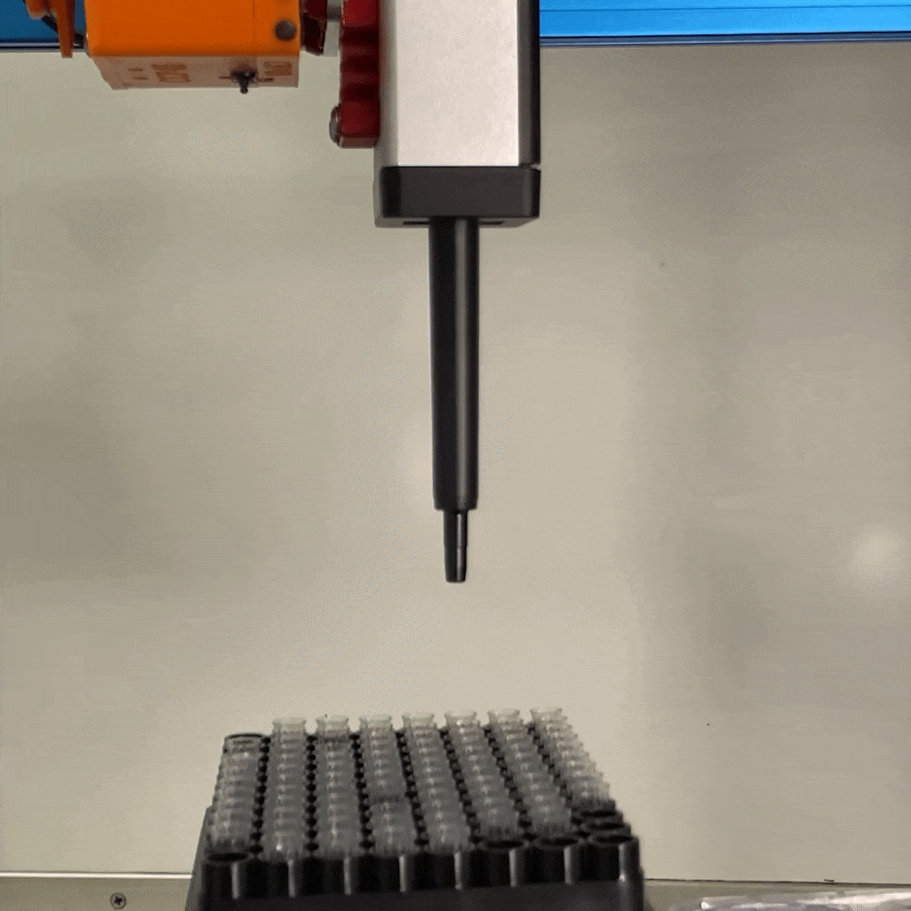
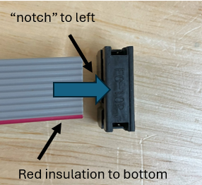
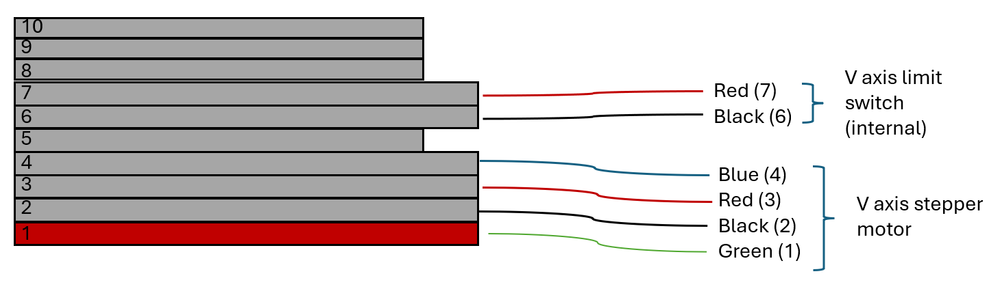
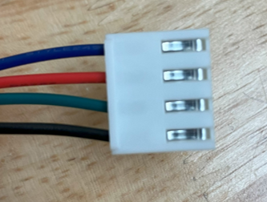
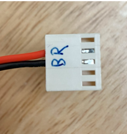

Pipette Tool
The pipette tool mounts an Opentrons OT2 pipette to Jubilee to perform liquid handling with disposable pipette tips. Opentrons OT2 pipettes are available in three volume ranges (up to 20 uL, up to 300 uL, and up to 1000 uL) and have a form factor that is amenable to integrating with Jubilee. Many automation-focused labs already have an OT2 and hence OT2 pipettes. This tool provides a way to repurpose them on Jubilee. Compared to syringe-based liquid handling tools, these pipettes avoid the possibility of sample cross contamination and provides options for greater accuracy and precision at low transfer volumes. The tool consists of a mounting bracket to attach the pipette to a tool changer plate, a flexure mechanism that enables pipette tip pickups, and a wiring harness to control the pipette’s internal motor. We have been able to reproduce the accuracy and precision values published by Opentrons for their pipettes after performing a gravimetric calibration. Choose the OT2 pipette tool if you need disposable pipette tips for your workflow or you need the pipette’s accuracy at low volumes. Consider other liquid handling tools if the cost of the pipette is prohibitive, you need access to a wider range of volumes, or you are purchasing pipettes from scratch. While this is an effective pipette tool, due to the high cost and limited feature set of OT2 pipettes we don’t recommend that new users purchase them specifically for working with Jubilee. New users should consider a syringe based tool as a starting point. If you do need a true disposable tip pipette, the Open Lab Automata project is developing an open hardware option - keep an eye on them for progress updates. We also are considering alternative commercial solutions and are happy to discuss these more if they are of interest to you.
Danger
Using an OT2 pipette on Jubilee is obviously outside the design and support scope of Opentrons, so do so at your own risk. The Jubilee project further does not guarantee the safety or reliability of the OT2 piptte tool adaptation (or any other component of the Jubilee platform). There is a risk of destroying a pipette with an incorrectly configured machine (ask me how I know this…) so move slow and verify everything is set up correctly.

Back of the pipette tool showing the flexure mechanism. When the pipette experiences resistance (i.e., pressing it against a pipette tip to pick it up), the flexure mechanism compresses until an endstop is triggered.
{kind=link}

Pipette tool picking up a tip. When the flexure mechanism shown above reaches the endstop, the pipette tool considers the tip to have been picked up and resumes other tasks.
Tool versions
There are two versions of the Jubilee pipette tool. One uses a flexure that is laser cut from Delrin. The other uses a 3D printed flexure mechanism. The laser-cut Delrin flexure can be purchased from SendCutSend for around $10 USD. It is cleaner and simpler to assemble, so we recommend using this version. If you can’t procure or fabricate the laser cut flexure piece, the 3D printed version works great too!
Skills and capabilities needed
3D printing
Soldering
Parts to Buy
OT-2 Pipette (tested with gen1 and gen2)
Tipracks for your OT2 pipette
See the shopping list for tool parts here.
Corrections: - Add 10-pin ribbon cable: 28AWG, 10 conductor ribbon cable, 7.5 feet, digikey option: https://www.digikey.com/en/products/detail/assmann-wsw-components/AWG28-10-G-1-300/21997415 - Add FC-10P connector for ribbon cable, one option: https://www.amazon.com/Antrader-FC-10P-2-54mm-Connector-50-Pack/dp/B07DVZBQ67?th=1 - Add 1/2in cable sleeve: https://www.amazon.com/Keco-100ft-Expandable-Braided-Sleeving/dp/B07K1XJNJN/ref=sr_1_10?crid=3PYOZ19GJFUXA&dib=eyJ2IjoiMSJ9.5CSsgeWmvO7VHn5FTz1tkMUth9Jvols3h8BDPqynXi2vm2_xcC6zEWUeoUwPqdaSfF2SQ6M5RmD6xeVeNz__tOWAP_qH6D26BtBo1i_vnrLg_ZlktzW4mR1FPZLfwjbpNgQhLkotDcup90P8qi43fyXAirzu_7Egcxttwacw57bRCuXWXs7jlRSKm0vubLLGiOzH704gADBpSGHGL2hqNP0y4_gN4IgAzaoo-yOfFIz4J634VOnOOINLubbSm5Zn1AZcg_CmdLxrRqjRqHoqi8_joils3HdSwdNobSQIbLQ.G2PCs4fmd-_s7oQNYSGAi_AhF_mQsUXrQ9i6m1V8Gy0&dib_tag=se&keywords=cable%2Bsleeve&qid=1724264681&s=electronics&sprefix=cable%2Bslee%2Celectronics%2C139&sr=1-10&th=1 - Add 22g hookup wire, something like 40 ft of it - Specify separate limit switch for 3D printed flexure version - add duet board connector housings
Parts to Fabricate
Pipette tool frame SolidWorks file and correctly sized parking posts can be found here.
Assembly Instructions
Wiring Harness Assembly
You will want your wiring harness to be long enough to provide sufficient slack for tool movement when routed down the front of the jubilee, below the machine, and to the back panel. 8 feet of wire length should allow for this.
Solder your limit switch to sufficiently long lengths of hookup wire
Cut a 7.5 foot length of 10 conductor ribbon cable
Attach an FC-10 connector to one end of the ribbon cable so that the ‘notch’ on the connector is to the left and the red cable insulation is towards to bottom when viewed from above. Attach the connector by pressing down on the housing so the teeth bite into the insulation, using pliers as necessary.
{kind=link}

Cut a length of PET cable sleeve that is about 6 inches shorter than your wires. Use a hot knife to cut this if you have one, or use scissors then melt the edges with a lighter or other heat source to minimize fraying.
Run your ribbon cable and limit switch wires through the cable sleeve. Make sure the limit switch and FC-10P connector are on the same side of the cable. Cover the ends of the PET housing with heat shrink tubing.
Tip
Use electrical tape to tape the loose ends of the wires together to make routing them through the sleeve easier, then use a pinching motion to feed the wires through
Add 22 awg extensions to the free end of the ribbon cable. This is necessary to allow attachment of connector crimps. The following instructions assume you are using blue, red, green and black hookup wire. You can use whatever color wire you have/want but do make sure to keep track of the order. Make these attachements by soldering and cover each connection with a piece of heat shrink.
Ribbon cable position |
Hook-up wire |
|---|---|
10 |
None |
9 |
None |
8 |
None |
7 |
Red - limit switch |
6 |
Black - limit switch |
5 |
None |
4 |
Blue - stepper motor |
3 |
Red - stepper motor |
2 |
Black - stepper motor |
1 (red insulation) |
Green - stepper motor |
{kind=link}

Terminate the 4 stepper motor hookup wires with appropriate crimps for the driver you will be using. If you are attaching the stepper motor to a driver on a duet expansion board as the rest of the instructions will do, use a VH crimp. See prerequisite knowledge for more on this.
Terminate the 4 limit switch wires (2 for the external limit switch and two for the internal limit switch) with molex KK254 connectors.
Place the terminated stepper motor wires in a JST VH 4 pin housing. When viewed from the contact side of the connector with the wires entering from the left, the order from top to bottom should be (in terms of color/ribbon cable position): [Blue/4, Red/3, Green/1, Black/2].
{kind=link}

Place the terminated limit switch wires into a molex 5-pin housing, in positions 2 and 3.
{kind=link}

Mechanical Assembly
Follow the version of the assembly instructions for the flexure design you chose:
Wiring Connections
The following Duet configuration guidelines will assume that you wire your new pipette tool to your Jubilee as follows
Connector |
Duet board position |
|---|---|
Stepper motor |
Driver 2 on expansion board 1 |
External (pipette tip pickup) limit switch |
IO2 on board 0 |
Internal (V axis) limit switch |
IO3 on board 0 |
See the default wiring instructions for illustrations.
Duet Configuration
These lines should be added to the config.g on your machine.
Note:
Anywhere you see
<>, you should remove the greater than/less than signs and replace them with the correct information based on your machine.Be careful where you add the g-code lines in your
config.gfile as the order in which they are defined matters! You’ll find information on where to add each one below.For more information about G-code, see the Duet G-code Documentation or the RepRap G-code Wiki.
1. Set Drive Mapping
M584 V<your_drive_number>
This command defines a new axis for the pipette motor and tells the Duet which board driver number you’re using.
We use the V axis here; however, if it is already in use on your machine, you can also use W/A/B/C. Each driver on the Duet boards are labeled (e.g., driver_0,driver_1, etc.). Add the driver number (n) here and preped it with 1.n if you are using an expansion board.
This G-code line shuold be placed the M584 commands for your other axes in your config.g file. It has to come before all the other M codes we’ll add next.
Example:
`M584 V1.2` ; pipette plugged into driver 2 on the expansion board `M584 V0` ; pipette plugged into driver 0 on the main board
2. Set Stepper Direction
M569 P<your_drive_number> S0
This command sets the stepper motor direction. The P field should match the M584 command above. The S field can be either 0 or 1.
Add this command alongside the M569 commands for your other motors in your configuration file.
Warning
The first time you home the pipette, you should check the direction that the motor is moving by removing the front plate and watching the draft shaft move.
During a homing step, it shold move towards the endstop. If it is moviong in the wrong direction (i.e., downwards), manually engage the endstop (i.e., click it!) and change the S parameter on this line from 0 to 1. Try again and make sure the motor moves in the expected direction.
Example:
`M569 P1.2 S0 `
3. Set Motor Current
M906 V<peak_current_in_milliamps>
This commands sets the peak motor current.
For Gen1 pipettes this shuold be 350 mA
For Gen2 pipettes this should be 500 mA Add this command alongside the othe
M906for the other moto5rs defined in your configuration file.
Example:
`M906 V350` ; 350mA peak current for gen1 pipette `M906 V500` ; 500mA peak current for gen2 pipette
4. Set Steps Per Millimeter and Step Type
M92 V<steps_per_mm>
M350 V16 I1
Set the number of steps/mm and enables 16x microstepping with interpolation.
For Gen1 pipettes this should be 48
For Gen2 Pipettes this should be 200 Add these commands alongside the other
M92andM350commands in yourconfig.gfile.
Example:
`M92 V48` ; for a gen1 single channel pipette `M92 V200` ; for a gen2 single channel pipette `M350 V16 I1` ; set microstepping after M92 commandNote: do not disable microstepping prior to define the
M92command for the pipette motor to simplify calculations as it will mess with the motor settings (not sure why)
5. Set V Axis Motion Attribute Limits
M201 V800
M203 V10000
M566 V4000
These commands set the max acceleration (M201), speed (M203) and jerk (`M566``) for the V axis.
Add these command alongside the M201/203/566 commands in your configuration file.
6. Configure Endstop
M574 V1 S1 P"^<your_pin_name>"
This command configures the endstop for the internal axis limit switch. Note that the carat (“^”) should be included to enable the pullup resistor; the quotes (” “) are necessary.
Pins are named as <board_index>.<pin>.in. The pin number can be found on your Duet board.
Add this command alongside the other M574 commands.
Example :
`M574 V1 S1 P"^0.io3.in"` ; pipette endstop plugged into io3 on main board
7. Define Tool
M563 P<tool_number> S”<tool_name>”
This command actually defines your tool. The tool number should be set based on the other tools you already have defined, and you can name your tool whatever human-readable text you’d like to see it as in Duet Web Control. Note that, because we are using the V axis, we do not need to add a D field here (as we might for a syringe or extruder tool).
Example:
`M563 P1 SP300 Pipette”` ; pipette with tool index 1
8. Define Pipette Tip Endstop
M574 Z1 P"^<your_pin_name>"
This command is to define the external endstop for picking up pipette tips.
In this case, it will be an enstop for the Z axis instead of the pipette axis (V). Similarly to section 6, the carat (“^”)and the quotes (” “) are necessary in thsi line as well.
Again, pins are named as follows <board_index>.<pin>.in.
Add this command alongside the other M574 commands
Example:
`M574 Z1 P"^0.io2.in` ; pipette top pick up endstop plugged into io2 on main board
9. Define Homing Macro
You are now done with updating your config.g file!
Next, you’ll need to define the homing routing for the pipette. In the Duet Web Control, navigate to System (i.e., sys/), then add a New File and name it homev.g.
Add the following content to it:
G91 ; relative moves
G1 V-200 F800 H1 ; big, slow negative move to look for endstop
G1 V1 F600 ; back off endstop
G1 V-10 F600 H1 ; find endstop again, slower
G90 ; absolute moves
G1 V0.5 F600 ; move to a position of 0.5 to start
Remember: The first time you home the pipette, you should check the direction of the mototr movement and ensure the draft shaft is moving upwards towardsthe endstop. If you notice the pipette tip ejector starts to engage, then manually stop the motion by pressing the endstop twice (to account for both searches for the endstop in the homing routine), and flip the direction of the motor (see step 2.)
10. Add V Homing to homeall.g
The homeall.g macro is used to home each of the machine’s configured axis at once. You can call the homev.g macro at the end of this file, and the pipette will home while sitting in its parking position.To do so, navigate to System (i.e., sys/), open homeall.g, and add the following line to the end:
M98 P"homev.g"
You are now done and your pipette should be configured!
Parking post positions and offsets
Now you are ready to power on the machine and complete the tool setup procedures.
Warning
The first time you home the pipette, you must check the direction that the motor is moving by removing the front plate and watching the draft shaft move. This will happen when you home all axes on the machine, so now is the time to check this. To do this, remove the two torx screws from the top of the pipette, slide the black plastic piece up about 1/2 inch, then pull the plastic off to the front. Nothing should need to be forced to remove the front cover.
During a homing step, it shold move towards the endstop. If it is moviong in the wrong direction (i.e., downwards), manually engage the endstop (i.e., click it!) and change the S parameter on this line from 0 to 1. Try again and make sure the motor moves in the expected direction.
Set the parking post positions and tool offset as described elsewhere in the documentation.
Using the pipette tool
Danger
The first time you use your new pipette tool, you should test the pipette tip pickup limit switch functionality. The pipette tool relies on the triggering of an endstop to detect a pipette tip pickup and stop bed movement. An incorrectly wired or configured endstop can lead to the bed continuing to move upwards after the pipette and tip rack have made contact, potentially destroying your pipette. Test this functionality by dropping the bed substantially in z, then having the pipette move to pickup a tip. While the bed is moving up, grab the pipette and pull it up. The endstop should trigger, stopping the bed and registering a tip pickup. If the bed keeps moving, cut the power and investigate.
Link to pipette usage example notebook:
To use a pipette in the science-jubilee python interface, start by setting up your Jubilee and loading labware as in the getting started notebook.
Next, import the pipette tool module:
from science_jubilee.tools import Pipette
Define and load the pipette tool:
P300 = Pipette.Pipette.from_config(0, 'Pipette', 'P300_config.json')
jubilee.load_tool(P300)
Add a tiprack and trash location (already loaded as labware)
P300.add_tiprack(tiprack)
P300.trash = trash[0]
Pickup the tool
jubilee.pickup_tool(P300)
Use one of the pipette commands to handle liquid. Depending on the command, tip management will be handled automatically.
volume = 50 # uL
source_location = stock_solutions['A1']
well_location = samples['A1']
pipette.transfer(volume,
source_location,
well_location,
blowout = True,
new_tip='once')
See the pipette API documentation for more details